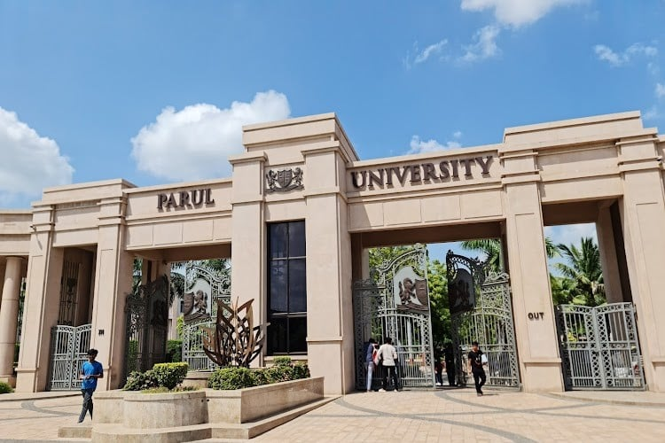
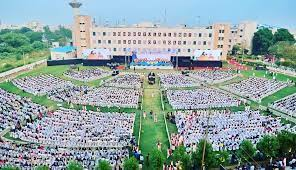

Parul University

Is Your Future Secure With Us?
Well, These Marks of Excellence Speak For Us!
You Also Can Be Among
Our Alumni
Working With
the World’s Top
Companies

Beyond Securing Your Future,
Studying at PU is a Unique Lifetime Experience
A multidisciplinary destination of learning and innovation, propelling quality in higher education through extensive research, a global campus diversity, a unique learning exposure and a record of being India’s Best Private University and the Youngest Private University to receive NAAC A++ accreditation.
WEL COME.TO VADODARA